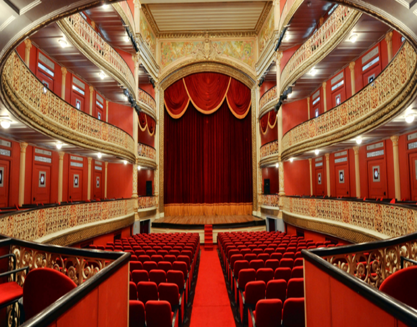
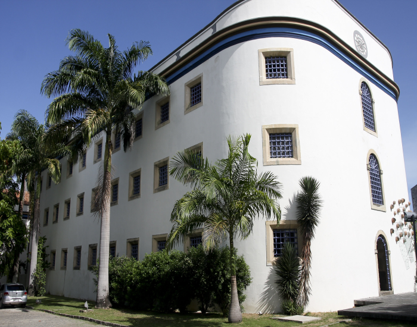
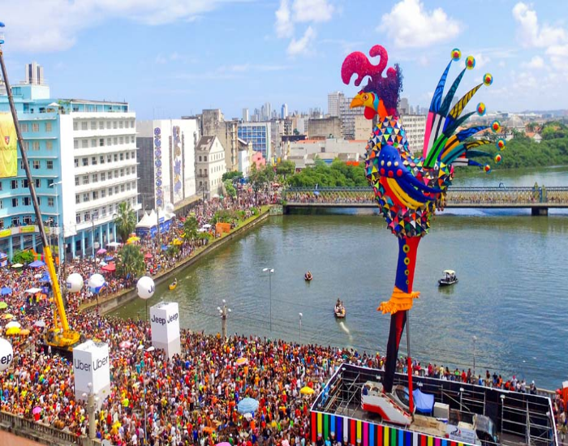

Recife, a veneza brasileira
Recife é uma cidade localizada no Nordeste do Brasil. Com mais de um milhão e meio de habitantes, é a capital do estado de Pernambuco e é conhecida também como “a Veneza brasileira”. Além disso, é muito rica em cultura, gastronomia e turismo.
Confira abaixo algumas opções de locais turisticos.


Praias
Recife é um dos destinos mais procurados do Nordeste brasileiro, tanto por turistas brasileiros quanto por estrangeiros. Além de ter muitas atrações interessantes no centro, seu litoral abriga algumas das praias mais lindas do Brasil.
Conheça algumas delas:
-
Enseada dos Corais

Praia tranquila de grande litoral, é conhecida por sua beleza e clima agradável. Ainda pouco explorada pelo turismo, se mantém praticamente ao natural, com vegetação nativa e alguns coqueiros.
Costuma receber um bom número de turistas durante a alta temporada, que aproveitam para relaxar, tomar um delicioso banho de mar e repor as energias. É um lugar ideal para o descanso, e no restante do ano fica praticamente deserta. -
Porto de galinhas

Porto de Galinhas, é um distrito localizado na cidade de Ipojuca, em Pernambuco, a cerca de 60 km de Recife. A vila é um dos melhores destinos de praia não apenas do Nordeste, mas do Brasil.
Não é preciso dizer muito para explicar o lugar: suas praias, caracterizadas pelas águas verdes e pelas entre piscinas naturais, saltam aos olhos e arrancam elogios dos mais descrentes.
O distrito e tem a facilidade de estar próximo do Aeroporto Internacional do Recife, fato que facilita muito chegada a Porto de Galinhas. Suas águas mornas e agradáveis em todo o ano convidam para um mergulho e têm potencial para conquistar pessoas de todas as idades. -
Praia do Paiva
_Pernambuco,_Brasil 1.svg)
Localizada em Cabo de Santo Agostinho, a Praia do Paiva é conhecida em Pernambuco por sua densa faixa de coqueirais, areia clara e mar cristalino. É uma opção perfeita para adicionar ao seu roteiro de viagem, e os motivos que vão te convencer a isso estão a seguir.
-
Calhetas

É um daqueles oásis em meio à loucura dos centros urbanos. Essa praia linda e de uma beleza natural pra ninguém botar defeito fica a apenas cerca de 40km da capital.
-
Boa Viagem

A Praia de Boa Viagem é a praia urbana mais famosa e importante da cidade de Recife. Ela fica no bairro da Boa Viagem e tem cerca de 7 quilômetros de extensão. Além disso, ela é delimitada de um lado pela Praia do Pina e do outro pela Praia de Piedade.
Centros culturais do Recife
Recife é a capital do estado do Pernambuco no nordeste do Brasil, conhecido pelas grandes festas de carnaval, pelo frevo, pela comida nordestina, por sua rica história e cultura e também pelas lindíssimas praias da região como Porto de Galinhas e Praia dos Carneiros que ficam em municípios bem próximos de Recife.
O que não falta é lugares pra conhecer nessa cidade incrível, por isso separamos abaixo uma lista com algumas dicas de lugares culturais para conhecer no centro de Recife.
-
Praça do Marco Zero

A praça tem o nome original de Praça Barão do Rio Branco, todavia ficou conhecida como Praça do Marco Zero pelo fato de que nela encontra-se o quilometro zero das estradas de Pernambuco. É formada por um marco de cor vermelha doado pelo Clube do Automóvel.
Na lateral da praça encontra-se a estatua do Barão do Rio Branco em bronze, com 2,80m de altura, do escultor Felix Charpentier. Já no centro pode ser vista a rosa dos ventos do pintor Cícero Dias. Nos períodos de momo a praça funciona como quartel general do carnaval multicultural do Recife. -
Oficina Cerâmica Francisco Brennand

Trata-se de um complexo monumental — museu e ateliê — com aproximadamente 2 mil obras, entre esculturas, murais, paineis, pinturas, desenhos e objetos cerâmicos. A principal temática da obra de Francisco Brennand é a origem da vida e a eternidade das coisas.
Possui diversas obras inspiradas na mitologia grega romana, história, fauna e flora, literatura dentre outros personagens. -
Teatro Santa Isabel
O Teatro de Santa Isabel é um teatro localizado na cidade brasileira do Recife, capital do estado de Pernambuco. É um raro exemplo de genuína arquitetura neoclássica da primeira metade do século XIX brasileiro. Foi nomeado em homenagem à Princesa Isabel.
Nas suas instalações ocorreram episódios importantes e curiosos da história do Brasil. O teatro recebeu visitantes ilustres como o imperador Dom Pedro II, foi palco da campanha abolicionista de Joaquim Nabuco, e nele Castro Alves conheceu o seu grande amor Eugénia Câmara.
-
Casa da Cultura
A Casa da Cultura é um centro de comercialização de artesanato da cidade do Recife, capital do estado brasileiro de Pernambuco. Funciona no edifício da antiga Casa de Detenção do Recife, que foi a maior cadeia do Brasil no século XIX e a primeira prisão radial pan-ótica da América do Sul.
-
Instituto Riscardo Brennand

O Instituto Ricardo Brennand é um espaço cultural sem fins lucrativos inaugurado em 2002, que salvaguarda um valioso acervo artístico e histórico originário da coleção particular do industrial pernambucano Ricardo Coimbra de Almeida Brennand.
Localizado nas terras do antigo engenho São João, no bairro da Várzea, ocupa uma área de 77.603 m² cercada por uma reserva de mata atlântica preservada.
Possui uma das mais modernas instalações museológicas do Brasil, abrangendo um complexo de edificações constituído pelo Museu Castelo São João (museu de armas brancas), Pinacoteca, Biblioteca, Auditório, Jardins das Esculturas e uma Galeria para exposições temporárias e eventos.
Carnaval Pernambucano
O Carnaval do Recife, parte do Carnaval Recife–Olinda, diz respeito à festa de momo realizada na cidade do Recife, no estado brasileiro de Pernambuco. É um carnaval multifacetado, com formas diferentes de carnaval de rua, desfiles de agremiações carnavalescas e apresentações de cantores e conjuntos musicais em palanques específicos.
O Recife possui o maior bloco carnavalesco do mundo, o Galo da Madrugada, que se apresenta no sábado de carnaval, ou "Sábado de Zé Pereira".
-
Galo da madrugada
O Carnaval do Recife, parte do Carnaval Recife–Olinda, diz respeito à festa de momo realizada na cidade do Recife, no estado brasileiro de Pernambuco. É um carnaval multifacetado, com formas diferentes de carnaval de rua, desfiles de agremiações carnavalescas e apresentações de cantores e conjuntos musicais em palanques específicos.
O Recife possui o maior bloco carnavalesco do mundo, o Galo da Madrugada, que se apresenta no sábado de carnaval, ou "Sábado de Zé Pereira". -
Bonecos de Olinda

Bonecos de Olinda são bonecos gigantes originados na cidade de Olinda e usados em eventos festivos como o Carnaval de Pernambuco. São feitos de tecido, isopor, papel, madeira, fibra de vidro e alumínio
-
Frevo

Frevo de rua é um frevo tocado por orquestra instrumental, sem adição de nenhuma voz cantando.Nos anos de 1930, com a popularização do ritmo pelas gravações em disco e sua transmissão pelos programas do rádio, convencionou-se definir o frevo como "frevo de rua", quando puramente instrumental.
É o mais comumente identificado como simplesmente frevo, cujas características não se assemelham com nenhuma outra música brasileira, nem de outro país. Primeiro gênero a surgir, diferencia-se dos outros por não conter letra alguma, pois é destinado exclusivamente para ser dançado